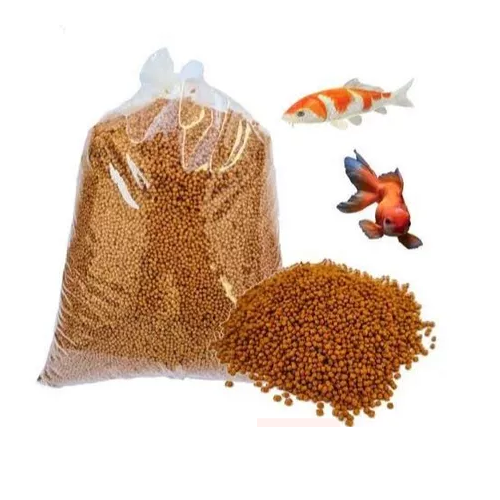

Ração para Carpas, Kinguios e outros peixes de Aquário/Lago/Rio

A ração Polinutri é um alimento completo e balanceado, ideal para peixes ornamentais como carpas koi, kinguios e outros onivoros de superfície. Sua fórmula premium garante nutrição adequada, crescimento saudável e excelente aceitação.
Produzida com ingredientes de alta qualidade como farinha de peixe salmão, spirulina, algas, prebióticos, beta glucanas e astaxantina, auxilia na intensificação das cores, fortalecimento do sistema imunológico e melhor desenvolvimento dos peixes.
Benefícios
- 34% de proteína de alta qualidade
- Auxilia no crescimento saudável
- Intensifica a coloração natural
- Fortalece o sistema imunológico
- Com prebióticos e beta glucanas
- Alta digestibilidade e aceitação
Espécies Indicadas
- Carpas Koi
- Kinguios
- Tilápia
- Cará
- Outros peixes ornamentais porte pequeno
Mix Campo, ração Mix Campo, produtos Mix Campo, alimentação para peixes Mix Campo